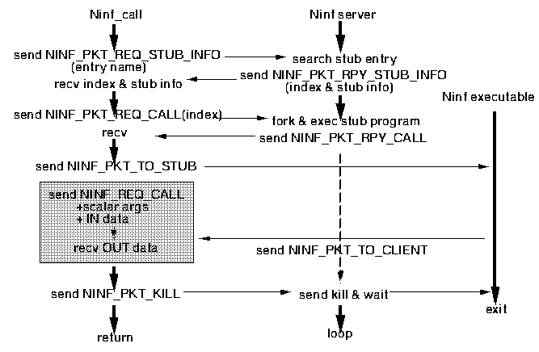

<!DOCTYPE HTML PUBLIC "-//W3O//DTD W3 HTML 2.0//EN">
<!Converted with LaTeX2HTML 95.1 (Fri Jan 20 1995) by Nikos Drakos (nikos@cbl.leeds.ac.uk), CBLU, University of Leeds >
<!Actually with its Japanized version JLaTeX2HTML 95 (Wed Mar 1 1995) by Masahiro Kitagawa (kitagawa@ee.es.osaka-u.ac.jp), Osaka University >
<HEAD>
<TITLE> Ninf Server$B$H$NDL?.(B</TITLE>
</HEAD>
<BODY>
<meta name="description" value=" Ninf Server$B$H$NDL?.(B">
<meta name="keywords" value="main">
<meta name="resource-type" value="document">
<meta name="distribution" value="global">
<P>
 <BR> <HR><A NAME=tex2html133 HREF="node11.html"></A>   <A NAME=tex2html131 HREF="node8.html"></A>   <A NAME=tex2html125 HREF="node9.html"></A>         <BR>
<B> Next:</B> <A NAME=tex2html134 HREF="node11.html"> Ninf Server $B4IM}%W%m%H%3%k(B</A>
<B>Up:</B> <A NAME=tex2html132 HREF="node8.html"> Ninf RPC   $B$N%W%m%H%3%k(B</A>
<B> Previous:</B> <A NAME=tex2html126 HREF="node9.html"> Ninf Executable  $B$H$N8r?.$N$?$a$N%W%m%H%3%k(B</A>
<BR> <HR> <P>
<H2><A NAME=SECTION00052000000000000000> Ninf Server$B$H$NDL?.(B</A></H2>
<A NAME=ninfServerProtocol>&#160;</A>
<P>
remote client$B$H(BNinf Server$B4V$O!"%Q%1%C%HC10L$NDL?.$r9T$&!#(B
$B$3$N%l%Y%k$N%W%m%H%3%k$O!"(BNinf library$B$N4X?tL>$+$i$N%$%s%?!<%U%'%$%9(B  $B$N<hF@!"(B
Ninf Executable  $B$N5/F0$r9T$&$b$N$G$"$k!#(B
<P>
$B$3$N%l%Y%k$N%W%m%H%3%k$O!"(B<code>MAX_PKT_LEN</code>$B0J2<$N%Q%1%C%H$rC10L$H$7(B
$B$FDL?.$9$k!#%Q%1%C%H$N(Bheader$B$K$O!"0J2<$N>pJs$,3JG<$5$l$F$$$k!#(B
<P>
<UL><LI> size: $B%Q%1%C%H$N%5%$%:(B
<LI> code: $B%3%^%s%I!"%Q%1%C%H$N<oJL$r<($9!#(B
<LI> arg1,arg2: code$B$K1~$8$?>pJs$r3JG<$9$k!#(B
</UL>
<P>
Ninf Server$B$K$O!"EPO?$5$l$F$$$k(BNinf Executable  $B$H4X?tL>$NBP1~I=$,$"$j!"4X(B
$B?tL>$r;XDj$7$F!"$3$N%F!<%V%k$N(Bindex$B$r<hF@$7$F!"$3$N(Bindex$B$rMQ$$$F!"(B
Ninf Executable  $B$r5/F0$9$k!#(B
<P>
$B%Q%1%C%H$N%3%^%s%I$O0J2<$NDL$j$G$"$k!#(B
<UL><LI> <code>NINF_PKT_REQ_STUB_INFO</code><BR> 
$B%G!<%?$H$7$F!"4X?tL>(B(Ninf Executable  $BL>$G$O$J$$(B!)$B$r;XDj$7$F!"4X?t$KBP1~$9(B
$B$k(B Ninf Executable  $B$N(Bindex$B$rMW5a$9$k!#(BServer$B$O$3$l$KBP$7$F!"(B
<code>NINF_PKT_RPY_STUB_INFO</code>$B%Q%1%C%H$G!"$3$N(Bindex$B$rJV$9!#(B
<P>
<LI> <code>NINF_PKT_RPY_STUB_INFO</code><BR> 
<code>NINF_PKT_REQ_STUB_INFO</code>$B$KBP$9$k1~Ez%Q%1%C%H!#(Barg1$B$K(Bindex$B$,3JG<$5(B
$B$l$F$*$j!"%G!<%?It$K$O(Bxdr$B7A<0$N(B $B%$%s%?!<%U%'%$%9(B  $B$rJV$9!#(B
<P>
<LI> <code>NINF_PKT_REQ_CALL</code><BR> 
arg1$B$K(Bindex$B$r;XDj$7!"$=$N(Bindex$B$KBP1~$9$k(B Ninf Executable  $B$r5/F0$9$k!#(B
$B5/F0$K@.8y$9$l$P!"(B<code>NINF_PKT_RPY_CALL</code>$B$rJV$9!#(B
<P>
<LI> <code>NINF_PKT_RPY_CALL</code><BR> 
<code>NINF_PKT_REQ_CALL</code>$B$,@.8y$7$?$3$H$rDLCN$9$k!#(B
<P>
<LI> <code>NINF_PKT_KILL</code><BR> 
$B5/F0$5$l$F$$$k(B Ninf Executable  $B$r=*N;$5$;$k!#JVEz%Q%1%C%H$O$J$$!#(B
<P>
<LI> <code>NINF_PKT_TO_STUB</code><BR> 
$B$3$N%Q%1%C%H$N%G!<%?$r!"8=:_$K5/F0$5$l$F$$$k(BNinf Executable  $B$KAw$k!#(B
<LI> <code>NINF_PKT_TO_CLIENT</code><BR> 
$B$3$N%Q%1%C%H$N%G!<%?$,!"5/F0$5$l$F$$$k(BNinf Executable  $B$+$i!"(Bclient$B$KBP$9$k(B
$B%G!<%?$G$"$k$3$H$r<($9!#(B
<LI> <code>NINF_PKT_ERROR</code><BR> 
request$B%Q%1%C%H$,%(%i!<$G$"$C$?$3$H$r<($9!#(B
</UL>
<P>
$B%/%i%$%"%s%H%W%m%0%i%`$H(BNinf Executable  $B$NDL?.$O(B
$B$3$N%l%Y%k$N%W%m%H%3%k$KKd$a9~$s$G9T$J$&!#(B
$B%/%i%$%"%s%H%W%m%0%i%`$+$i(BNinf Executable  $B$X$NDL?.$O(B
<code>NINF_PKT_TO_STUB</code>$B%Q%1%C%H$KKd$a9~$^$l$k!#(B
Ninf Server $B$O$3$N%Q%1%C%H$N%X%C%@$r<h$j30$7!"Cf?H$r(B
Ninf Executable  $B$X$N%9%H%j!<%`$KN.$9!#(B
Ninf Executable  $B$+$i%/%i%$%"%s%H%W%m%0%i%`$X$NDL?.$O!"(B
<code>NINF_PKT_TO_CLIENT</code>$B$KKd$a9~$^$l$k!#(B
Ninf Server $B$,(B Ninf Executable  $B$+$i$N%9%H%j!<%`$r@Z$j$o$1!"(B
$B%X%C%@$r$D$1$F(B<code>NINF_PKT_TO_CLIENT</code>$B$N%Q%1%C%H$H$7$F(B
$B%/%i%$%"%s%H%W%m%0%i%`$XAw?.$9$k!#(B
<P>
$B?^(B<A HREF="node10.html#ninf_call">4</A>$B$K!"(Bremote client <code>Ninf_call</code>$B$N35MW$r<($9!#(B
<P>
<P><A NAME=191>&#160;</A><A NAME=ninf_call>&#160;</A>

<BR><STRONG>$B?^(B 4:</STRONG>  Ninf RPC  $B$NMQ$$$k%W%m%H%3%k(B<BR>
<P>
<P>

<BR> <HR>
<P><ADDRESS>
<I>Hidemoto Nakada <BR>
Wed Dec 20 05:42:46 JST 1995</I>
</ADDRESS>
</BODY>
